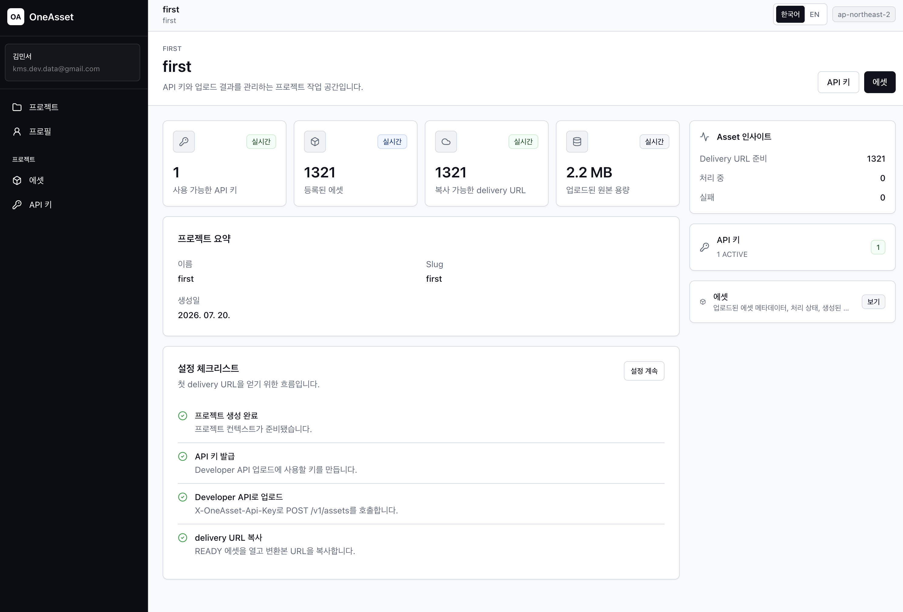
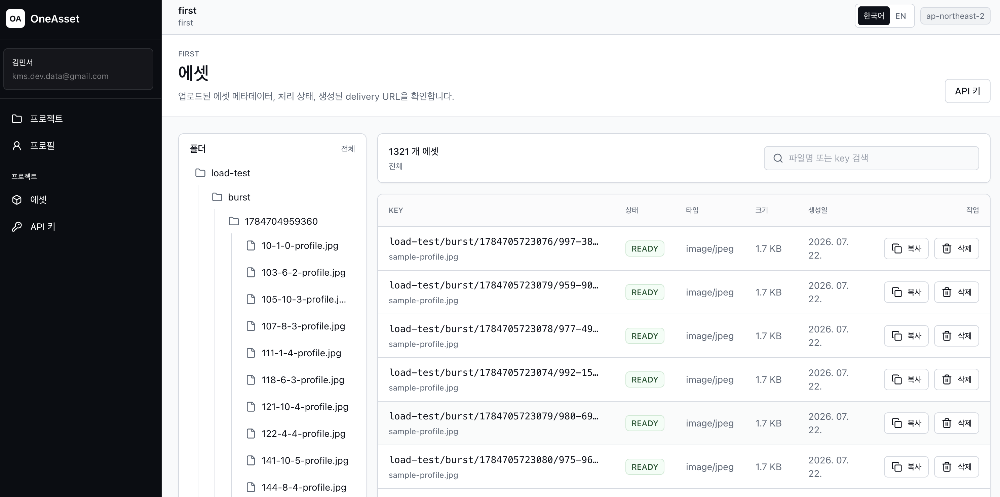
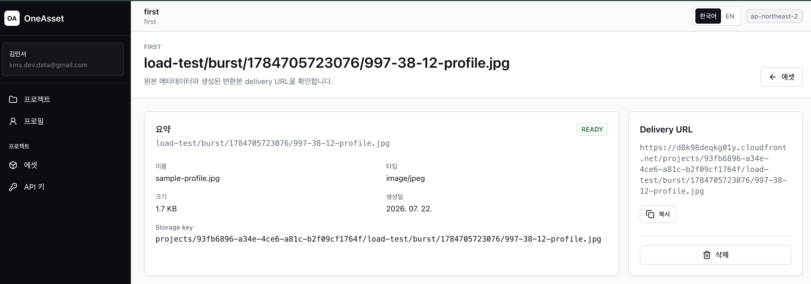
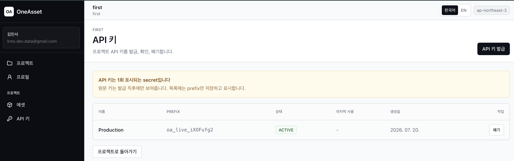
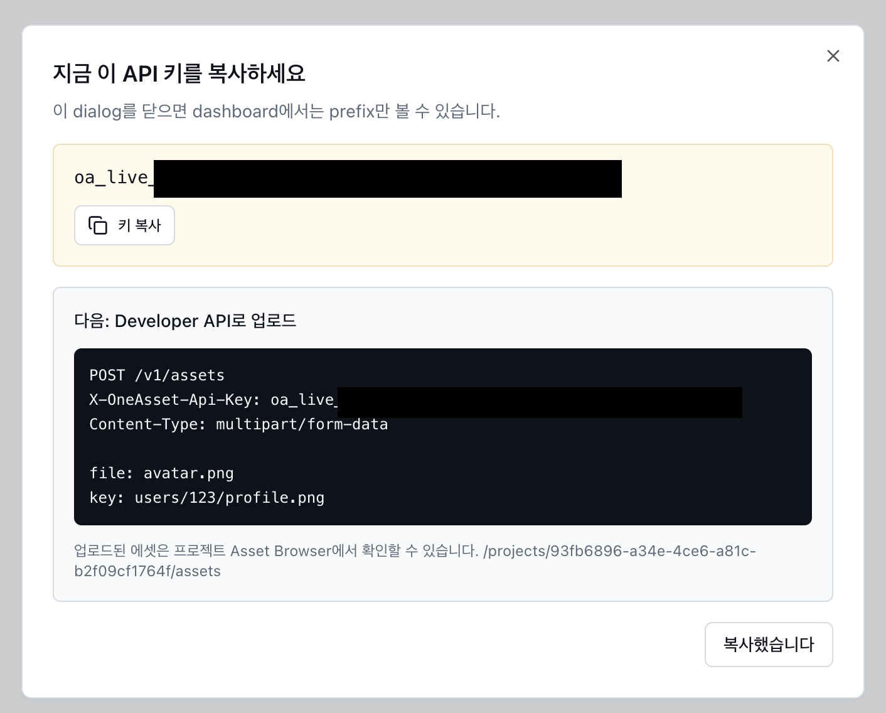

01
이미지 저장·변환·배포를 하나의 API로 분리했습니다





OneAsset은 외부 애플리케이션이 API Key를 통해 이미지를 업로드하고, 원본 파일과 변환된 WebP variant를 안정적으로 사용할 수 있게 만든 클라우드 기반 에셋 딜리버리 API입니다.
이미지 파일은 private S3 bucket에 저장하고, 업로드 이후의 이미지 변환 작업은 SQS와 Lambda로 분리했습니다. 클라이언트는 업로드 응답으로 받은 key, storageKey, deliveryUrl, status를 기준으로 에셋을 사용하며, 최종 파일 접근은 CloudFront를 통해 이루어집니다.
APISpring Boot API
AuthAPI Key 기반 Developer API
StorageS3 private storage
AsyncSQS/Lambda async processing
DeliveryCloudFront delivery
OpsECS on EC2, k6, CloudWatch